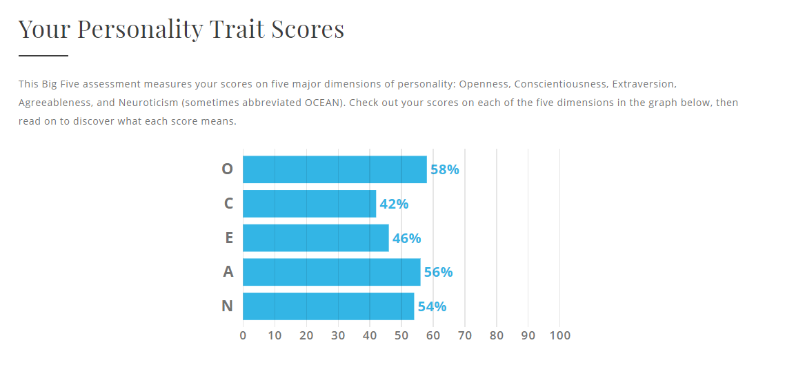
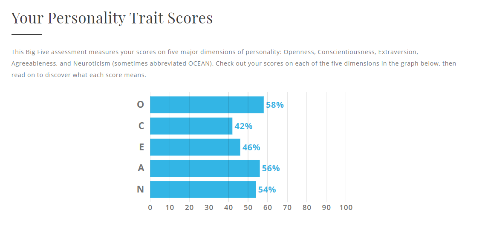

Profile
 

These are the results of my Myers-Briggs test and learning style test and Big Five Personality test. The Myers-Briggs test shows that I am an introverted observant but occasionally stubborn person. I am usually competent in certain projects. I have a cheerful personality and rarely feel stressed, preferring to go with the flow. Through all this, I can stay relaxed, live in the present and refuse to worry too much about the future. In the learning style test, I can see that visuals are my main way of learning. I don't like long lectures, which can be headache inducing and impossible to focus on, and it's easier to understand if there are often pictures or videos mixed in, so using pictures, icons, and videos are all good methods. In a team, I may often like their expectations more than my colleagues. Quiet and introverted, this personality type usually needs a little space, but also likes to peek at other people's work to see if something interesting is happening. I am not naturally emotional or empathetic, but rather a blunt communicator, which can lead to misunderstandings or hurt feelings. However, I also have a certain sense of humor, sometimes even a bit of presumption, and have a knack for not only resisting workplace conflicts, but for defusing them with just the right amount of banter to make it all work.